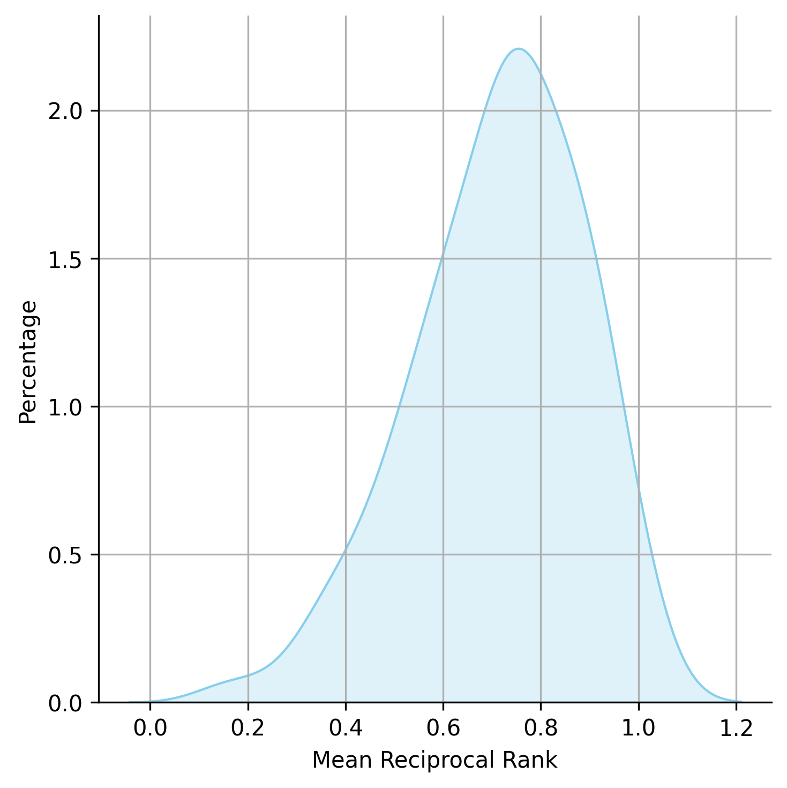

Cold Start & Tuning for Retrieval Augmented Generation
Introduction
In the current data-driven world, businesses are adopting advanced technologies to stay competitive. Large language models (LLMs) are revolutionizing the way businesses interact with data, allowing intelligent conversations and extracting valuable insights. However, LLMs have their limitations - first, they are trained on general data with historical cut-off dates making it challenging for them to provide real-time insights. In addition, LLMs do not have access to proprietary data further limiting their scope. Second, without being provided relevant external data, LLMs struggle to answer specific questions related to a company’s specific business application.
A retrieval augmented generation (RAG) system addresses these challenges by integrating external data, potentially from private company data, with an LLM to provide accurate and up-to-date responses. A RAG system fetches relevant external data to add to the LLM’s context to accurately answer a question. Utilizing RAG-based LLM systems is an important tool for enabling LLMs to provide accurate responses to real-time inquiries.
Although a RAG system enhances an LLM’s ability to provide correct responses, there is still a need to optimize a RAG system for precise context retrieval and optimal responses. This article discusses how to cold start a RAG system, which involves preparing a dataset of questions and the best context to answer the questions, and functionality that allows users to asses the accuracy of the context retrieval and determine the parameters to tune in order to improve the accuracy of the RAG system. Robust open source libraries such as LlamaIndex and LangChain are leveraged to help develop the RAG system. The following sections outline the process of initiating and refining a RAG system for evaluation and tuning.
Data Ingestion and Index creation
To cold start a RAG system, an external index of data needs to be provided to the LLM. For our analysis, data is gathered from 106 reports formatted as pdfs. These reports vary in their content, page length, formatting, structure, visual elements, tone, and writing style. This collection of reports provides a diverse set of data to generate questions from. Table 1 below provides summary statistics regarding the size of these pdfs and illustrates the variation in terms of size.
Table 1: Summary of report statistics
| Variable: | Obs. | Mean | Std. Dev. | Min | Median | Max |
|---|---|---|---|---|---|---|
| File size (mb) | 106 | 3.1 | 3.6 | 0.3 | 1.9 | 20.1 |
| Pages | 106 | 17.9 | 12.1 | 1.0 | 15.0 | 54.0 |
| Characters | 106 | 17347.5 | 16003.6 | 29.0 | 14197.5 | 89667.0 |
| # of Text Chunks | 106 | 17.4 | 11.9 | 1 | 15 | 54 |
These reports are loaded and the text is extracted from each pdf using optical character recognition (OCR). After the text is extracted, a text splitter is used to partition the data into pages where each text chunk represents a page. The text splitter recognizes single line-breaks, double-line breaks, and spaces ensuring that sentences and paragraphs are kept in the same chunks. Next, these text chunks are indexed in a “Vector Store” after being transformed and projected into numerical embeddings. Words or sequences of words are given a numerical representation in terms of an N-dimensional vector space, where “N” represents the number of dimensions. The purpose is to encode a word such that words with similar semantic meaning are encoded near each other in the N-dimensional vector space. OpenAI’s text-embedding-ada-002 model, which creates a 1536-dimensional vector for each word or sequence of words, is used to generate vector representations of the text. In total, there over 1851 text chunks that will be used to generate questions and answers from.
Question Generation Process
In order to evaluate the context retrieval of a RAG system, question-context pairs are generated that can only be answered using information from the associated text chunk. The previously mentioned Vector Store is used to generate these question-context pairs where each question is best answered with the context provided. The process is described below:
- Generate a question based off a specific text chunk.
- Perform a vector (similarity) search across all text chunks and identify the top 8 text chunks with the most semantically similar embeddings associated with the specific text chunk mentioned in step 1.
- Iterate across these eight text chunks and, if necessary, revise the question in Step 1 so that it cannot be answered by these other text chunks.
- If it is not possible to generate a question specific to the text chunk described in steps 1-2, then a “Failed” response will be generated.
- Save the generated response as: (1) a question generated from unique text chunk described in step 1 or (2) “Failed” response.
This process is repeated until a Question or Failed response is generated for each text chunk. Generating these question-context pairs rely on two types of prompts utilized during steps 1 and 2 above. The first prompt is used to initialize the process of generating an unique question and is described below:
text_qa_prompt = (
"Context information is below.\n"
"---------------------\n"
"{context_str}\n"
"---------------------\n"
"Query information is below.\n"
"---------------------\n"
"{query_str}\n"
"---------------------\n"
"Using both the context information and the query information above, "
"please write me a factual question that can ONLY be answered by the above query information\n"
"and CANNOT be answered by the context above.\n"
"If you cannot generate a question that can ONLY be answered from the above query information, then respond with the word 'Failed'"
)
Where {query_str} represents the specific text chunk mentioned in Step 1 and {context_str} represents the next text chunk contained in the document. After an initial question is generated, a second prompt is used to iterate across all the remaining text chunks to revise or keep the same question. This second prompt is described below:
refine_template_str = (
"The original query information is as follows: {query_str}\n"
"We have provided an existing answer: {existing_answer}\n"
"Please refine the existing answer (only if needed)"
"such that it CANNOT be answered with the new context below.\n"
"------------\n"
"{context_msg}\n"
"------------\n"
"Using both the new context and your own knowledge, update or repeat the existing answer.\n"
)
Where the {query_str} represents the specific text chunk mentioned in step 1 and the {existing_answer} represents the question that was previously generated. The {context_msg} contains information from the next text chunk in the document, which the model uses to determine if the question needs to be updated. Table 2 below provides a few examples of generated question-context pairs from the process described above:
Table 2: Examples of question-context pairs generated from various reports
| Report | Page | Question |
|---|---|---|
| MovinOn Mobility Survey | 2 | Who conducted the survey on post-COVID mobility and lifestyles among young urban dwellers aged 18-34? |
| MovinOn Mobility Survey | 3 | What does the respondent from Nantes use as their means of transportation? |
| MovinOn Mobility Survey | 4 | What percentage of Gen Z and Y use shared mobility applications? |
| MovinOn Mobility Survey | 5 | What percentage of Gen Z thinks that owning a car is an important stage in life compared to Gen X? |
There were 1620 questions generated from these 1851 text chunks with 231 text chunks reporting a “Failed” response suggesting a unique question could not be generated. There are several reasons why a “Failed” response might be generated with a few common reasons being (1) the particular pdf only has one page (2) the text chunk contains a summary of rest of the report (3) the pdf does not contain much text, but many images. The next section discusses how answers are generated and context retrieval is evaluated.
Answer Generation and Evaluation of Context Retrieval
The next step in the RAG system is to prompt the LLM to generate answers for the questions that have been created during the Question Generation process. To perform this process, the LLM is given access to the external data indexed in a Vector Store (as described in the Data Ingestion and Index Creation section) and retrieves the top 4 most similar text chunks used to generate a response. The responses are stored along with the 4 retrieved text chunks. Table 3 below provides the same questions shown in Table 2 along with the answers generated, and another variable “reciprocal rank,” which we will describe in the next paragraph.
Table 3: Examples of question-context pairs, answers, and retrieved text chunks from various reports
| Question | Answer | Reciprocal rank |
|---|---|---|
| Who conducted the survey on post-COVID mobility and lifestyles among young urban dwellers aged 18-34? | The survey on post-COVID mobility and lifestyles among young urban dwellers aged 18-34 was conducted by Kantar. | 1 |
| What does the respondent from Nantes use as their means of transportation? | The respondent from Nantes uses a combination of their car and a streetcar for transportation. They drive their car to a streetcar stop and then complete their journey using the streetcar. This method is chosen for its convenience and speed, as it eliminates the need to find parking. | 1/2 |
| What percentage of Gen Z and Y use shared mobility applications? | 61% of Gen Z and Y use shared mobility applications. | 1/2 |
| What percentage of Gen Z thinks that owning a car is an important stage in life compared to Gen X? | 32% of Gen Z consider that owning a car is an important stage in life, compared to 34% for Gen X. | 1 |
To evaluate if the correct text chunk is retrieved, we identify the rank of the text chunk containing the information needed to answer the question. This information is then used to construct the reciprocal rank (1/rank) for each question. The reciprocal rank indicates the position of the relevant text chunk needed to answer the question. For example, a reciprocal rank of 1 means the top retrieved text chunk was the one that contained the relevant information to answer the questions while a reciprocal rank of 1/4 mean the the 4th highest retrieved text chunk contained the relevant information. In Table 3, a few examples of reciprocal rank are provided where the relevant text chunks were either the first or second highest retrieved text chunk. These reciprocal rank scores are gathered to construct the mean reciprocal rank (MRR), which is a measure of how effective the RAG system is at retrieving the relevant context. The formula for constructing MRR is illustrated in Equation 1 below:
Equation 1: Formula for constructing Mean Reciprocal Rank
$$ \begin{align} MRR & = {\frac{1}{N}}\quad{\sum\limits_{i=1}^{N}{\frac{1}{rank_i}}} \quad \end{align} $$
Where $N$ represents the total number of questions and $rank_i$ represents the position of the relevant text chunk for the $ith$ question. Figure 1 illustrates the distribution of the MRR results aggregated for each report. The MRR aggregated across all reports was 0.70 with a standard deviation of 0.40. However, as shown in figure 1, there is substantial variation in MRR across reports ranging from 0.17 to 1.00. This finding suggests certain types of reports are easier (or more challenging) to retrieve the relevant text chunks from.
Figure 1: Distribution of MRR results across all reports

Tuning for Optimal Context Retrieval
To initialize the RAG system, text chunks are transformed to vector embeddings and stored in a Vector Store. The text chunks are retrieved by prompting the LLM and retrieving the top 4 most semantically similar text chunks. However, there are several ways to improve the accuracy and efficiency of the context retrieval of a RAG system. Tuning a RAG system is a comprehensive process and provided below are a few factors to consider adjusting:
- Type of Index (Vector Store, Summary, Keyword Table): Choosing the appropriate index type significantly influences context retrieval, and each index has its own advantages. A Vector Store stores vector embeddings for efficient similarity comparisons. A Summary Index offers condensed representations of text, enabling quick context understanding. A Keyword Table Index simplifies searches based on predefined keywords, streamlining retrieval processes.
- Number of text chunks for retrieval: Determining the optimal number of text chunks to consider during retrieval has its trade-offs. While retrieving a limited number, such as the top 4 text chunks, ensures efficiency, experimenting with different quantities might optimize the trade-off between accuracy and speed.
- Context Retrieval Post-Processing: Incorporating a context retrieval post-processor, such as an LLM reranker, adds another layer of refinement. This step involves re-ranking the retrieved text chunks using a LLM to determine the relevance of the results. Implementing a reranker could improve the accuracy of retrieving the correct context.
- Metadata and Keyword Filtering: Incorporating metadata and keyword filtering can help refine context retrieval. Metadata, like timestamps or categorizations, aids in filtering irrelevant information. Keyword filtering involves using specific terms or phrases to narrow down search results, ensuring retrieved chunks align closely with the question’s context. Implementing these filters may enhance the performance of the RAG system.
- Fine-tuning embedding models: Fine-tuning an open source embedding model on a specific dataset involves adjusting its parameters based on new task-specific data. These adjustments, based on the new task-specific data, allow the fine-tuned embedding model to discern and encode the subtleties of words, phrases, and contextual nuances within the dataset. This can improve the model’s performance over a baseline embedding model that relies solely on generic historical data.
- Architectural tuning: Modifying the RAG architecture can also improve retrieval performance. There are various ways to tune the RAG architecture, which could involve tuning several parameters and/or implementing different retrieval strategies. For example, one approach combines a vector (similarity) and keyword search to retrieve text chunks and subsequently applies a LLM reranker. Another strategy generates multiple questions from a single query, retrieves the answers, and then merges the results. The diversity in RAG architectures demonstrate the importance of selecting the most appropriate method to enhance retrieval performance for a particular application.
Tuning the RAG system directly impacts the MRR and standard deviation associated with context retrieval. Higher MRR values indicate a more effective RAG system in locating relevant information. Lower standard deviations signify consistency in context retrieval and increase the reliability of the RAG system. Adjusting the parameters in a RAG system is fundamental to unlocking the full potential of LLMs. Through continuous evaluation, experimentation, and refinement of the RAG system, companies can develop a highly efficient and accurate RAG system tailored to their specific business applications.
Concluding remarks
This article discusses the need for developing a RAG system that enables LLMs to provide real-time insights incorporating external data to suit a company’s specific business application. We walked through the process of developing a RAG system and evaluating the effectiveness in accurately retrieving information to answer questions. The evaluation involved measuring the MRR associated with using a simple vector search that retrieves the top 4 most similar text chunks. Then, we briefly mentioned that the context retrieval of a RAG system can be improved by tuning its parameters. Some parameters include the type of index to use, number of text chunks retrieved, fine-tuning embedding models, and including a post-processor. The next part of this series “Cold Start and Tuning for Retrieval Augmented Generation: Part 2” delves deeper into tuning these parameters to optimize the RAG system and specifically improve context retrieval and response generation.
← all writing